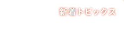
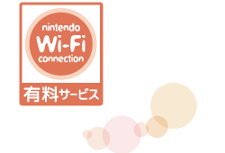
「あんしん」・「かんたん」・「無料」を合言葉に多くの人に利用していただいているニンテンドーWi-Fiコネクション。
これとは別のサービスとして2008年4月1日より、新たに「ニンテンドーWi-Fiコネクション有料サービス」が始まりました。Ｗｉｉポイントを使ってゲームの追加コンテンツをダウンロード購入したり、ソフトを拡張したりと、新しい楽しみ方が広がります。
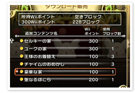
「ニンテンドーWi-Fiコネクション有料サービス」では、ご購入済みソフトの新しいアイテムやステージ、マップなどの追加コンテンツをダウンロード購入したりすることができます。ゲームによっては、追加コンテンツのダウンロード購入のほかにも、無料で世界中のともだちと対戦したり、一緒に冒険に出たりすることができるものもあります。
2008年5月1日現在、この「ニンテンドーWi-Fiコネクション有料サービス」に対応しているのは、Ｗｉｉウェアで配信されている『小さな王様と約束の国 ファイナルファンタジー・クリスタルクロニクル』（スクウェア・エニックス）、『ＬＯＮＰＯＳ』（元気）、『ことばのパズルもじぴったんＷｉｉ』（バンダイナムコゲームス）の３タイトル。
『小さな王様と約束の国』では、新しいダンジョンや建物、王様のお召しかえができる機能などが追加されます。『ＬＯＮＰＯＳ』では追加問題を、『ことばのパズルもじぴったんＷｉｉ』では追加ステージを購入することができます。
これからも、対応タイトルは増えていく予定ですのでお楽しみに。
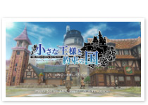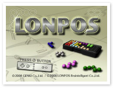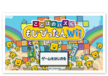
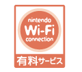
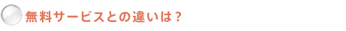
目印はこの赤いロゴマーク。このロゴがついているソフトは『ニンテンドーWi-Fiコネクション有料サービス』対応のソフトです。青いロゴマークがついているソフトは、今までどおり無料で楽しんでいただくことができます。
| 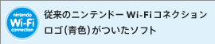 | 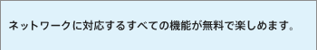 |
|---|---|
| 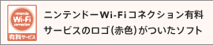 | 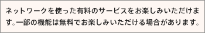 |
なお、赤いロゴマークが付いていても、一部のWi-Fiサービスは無料で遊べるソフトもあります。たとえばWi-Fi対戦は無料で遊べて、追加のコンテンツ配信は有料、というソフトがあります。全部のネットワークサービスが有料か、一部だけが有料かについては、説明書もしくは購入画面で説明されていますので、それぞれのソフトの説明をよく確認してください。
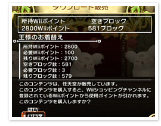
有料の追加コンテンツのダウンロード購入は各ソフトの中のメニューからどうぞ。Ｗｉｉポイントを準備してから、それぞれのソフトの中で、追加コンテンツの購入手続きをしてください。
最後にもう１つご連絡。
「ニンテンドーWi-Fiコネクション有料サービス」は『小さな王様と約束の国』に関しては2008年4月1日から、『ＬＯＮＰＯＳ』に関しては2008年4月8日から、そして『ことばのパズルもじぴったんＷｉｉ』に関しては4月30日から、それぞれ開始されていますが、それ以前に上記のタイトルを購入した方は、有料サービスを購入可能な最新のバージョンを「Ｗｉｉショッピングチャンネル」から再ダウンロードしていただく必要がありますので、ご注意を。